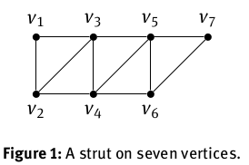
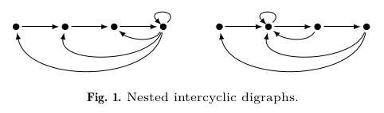

Broadly, my research interests involve computational biology and general mathematical modelling of biological processes, systems, and phenomena. In particular, I am currently interested in applying machine learning/artificial intellgience technqiues in tandem with differential equations and stochastic models to answer questions of cancer stem cell evolution and treatment response in the study of human cancers. I find biological systems to be fascinating in their complexity and hope to elucidate their behaviour by using stochastic machine learning techniques coupled with traditional models. After all, nature has no compunction to regulate towards easy description even if it does so in aggregate.
Sensitivity to predator response functions in the chemostat Master's Thesis Aug 7, 2017
Brydon Eastman
There are a variety of types of mathematical models called predator-prey models. In these models there is one being (whether an animal, or a bacteria population, or some other example) called the predator that consumes the prey. There is implicitly some benefit to this for the predator which mathematically we represent by the predator response function.
Roughly, the predator respponse function represents the fitness benefit to the predator for consuming a certain amount of prey. Typically the predator response function is a saturating function such that it's always positive, always increasing, and always less than some total capacity. The intuition is like this: initially it's good for the predator to eat prey, since the alternative is starvation of the predator. However, past a certain point the
You can view these publications by clicking the images of the papers. Most of these are open-access, but if you have any issues accessing the PDFs for any reason contact me and I would be more than happy to assist. For each of these publications I include a summary that can be viewed. These summaries are written with the intention that an undergraduate student could gain a birds-eye-view of the content of the research article.
A comparison and calibration of integer and fractional order models of COVID-19 with stratified public response Mathematical Biosciences and Engineering To Appear
Somayeh Fouladi, Mohammad Kohandel, Brydon Eastman
Some placeholder content for the collapse component. This panel is hidden by default but revealed when the user activates the relevant trigger.
Reinforcement learning derived chemotherapeutic schedules for robust patient-specific therapy Nature Scientific Reports Sep 9, 2021
Brydon Eastman, Michelle Pzedborski, Mohammad Kohandel
View summary or view the asbstract.
This project was presented as a poster at the 2021 meeting of the Society for Mathematical Biology for which I received the Applied BioMath Poster Prize. Here are the links to the video of the poster presentation and to the poster itself.
Modeling the impact of public response on the COVID-19 pandemic in Ontario PLoS One Apr 14, 2021
Brydon Eastman, Cameron Meaney, Michelle Pzedborski, Mohammad Kohandel
A Predator-Prey Model in the Chemostat with Holling Type II Response Function Mathematics in Applied Sciences and Engineering Nov 1, 2020
Tedra Bolger, Brydon Eastman, Madeleine Hill, Gail S. K. Wolkowicz
The effects of phenotypic plasticity on the fixation probability of mutant cancer stem cells Journal of Theoretical Biology Oct 21, 2020
Brydon Eastman, Dominik Wodarz, Mohammad Kohandel
From Solid-State NMR to Crystal Structures through Combinatorial Tiling Theory Int. Union Crystallography Jan 1, 2018
Darren Brouwer, Janelle Vanderhout, Chelsey Hurst, Brydon Eastman
Pentadiagonal Companion Matrices Special Matrices Oct 28, 2015
Brydon Eastman and Kevin N. Vander Meulen
View summary or view the abstract.
There's a lot in this paper I'm proud of. This paper was the "capstone project" for my honours mathematics major in undergraduate. Below I talk about how we classified all sparse companion matrices (and you should probably read that summary before this one, as I reference a lot of the ideas there). I also talked about how there are different representations of the same matrix that are isomorphic in a certain sense under transpose and permutation similarity (or relabelling vertices of the associated digraph). Now linear algebra underlies a surprising amount of computational mathematics (from solutions of PDEs to neural networks to Fourier transforms) and there are certain algorithms that work really well with matrices of certain "band-width". Thinking in diagonals, there are the so-called tri-diagonal matrices, matrices where everything is zero except the main diagonal and the first super and sub diagonal. We show that no tri-diagonal matrix can be a companion matrix. Next up are the penta-diagonal matrices (you have the main diagonal, the first two super-diagonals, and the first two sub-diagonals). Now we already knew that some companion matrices could be represented in a pentadiagonal form, so our next question was: which ones? In this paper we classified all the sparse pentadiagonal companion matrices.
How did we do this? Well, graph theory was our trusty tool so we first applied graph theory. In so doing we were able to isolate which of our companion matrices would be pentadiagonal. They corresponded to those graphs that were subgraphs of a "strut".

We then algebraically express all of these matrices in pentadiagonal form and in so doing we discover that all the pentadiagonal companion matrices happen to belong to Fiedler's class.
But remember how in that original companion matrix paper we didn't really care about the labelling of these vertices? There's a sense that relabelling the vertices gives you the "same" graph. And it does, that is true. But we're not interested in graphs right now, right now we're interested in matrices. And relabelling these vertices can take a matrix that has a pentadiagonal form (under some particular labelling) and place it in a form that isn't pentadiagonal. (In fact, in that original matrix way of presenting companion matrices that I discuss below, for large enough \(n\) none of those matrices are pentadiagonal as presented, even if they're equivalent to a pentadiagonal matrix).
So our next question was: great, now that we've identified all the sparse companion matrices that possess a pentadiagonal form, how do we recover the permutation that takes them from the "standard form" into this pentadiagonal form? This makes up the bulk of the back-half of the paper. This is where I had a moment where I felt very, very clever. Remember how we can express Fiedler's matrices in standard form as a lattice path, well this lattice path has many "corners". We recognized that if we counted how many steps you took before you turned a corner, you'd have this "flight length sequence", and I found a way to go from this flight-length sequence to the permutation required.
A much cleaner version of the method I uncovered is in the paper. The original method was very, very strange. I remember sitting in my undergraduate thesis advisors office explaining the process to him ("you start with the biggest number that's in the middle, then you slide the numbers until you hit a number bigger than yourself, you can't cross that, but you're trying to get everything as ascending as possible without crossing numbers bigger than yourself, except...") and after 30 minutes of me presenting my scatter-brained algorithm and Maple code that corroborated my idea he paused, sighed, and said "yes I see that this seems true, how on Earth can you ever prove that?". I had worked with him on many projects at this point and he had carefully steered me away from many impossible proofs that I had attempted in the past, so I recognised the message underneath his words. It was the same voice he used when talking to me about Collatz' conjecture or about my hail-mary attempt at proving the \(2n\) conjecture for zero-nonzero patterns the year prior. I can't remember how many meetings we had after that, but I do remember when I presented to him the water-tight proof (complete with so, so much mathematical machinery). We whittled away at that proof (though fundamentally, it is the same argument) to present the version we have in the paper (while it's slightly less scatter-brained with slightly less machinery, it is still a bit scatter-brained and does contain an inordinate amount of definitions).
There aren't many moments in life where you get to do the impossible, and very little in life is guaranteed, but I've always revered mathematics as a field that effectively guarantees the provision of plenty of opportunities to whittle away at weird, weird problems until the stars align and a result falls out. Once I worked with an analytical chemistry postdoc who said to me, in a slightly condescending tone, "isn't linear algebra done?" Oh boy, if only he knew. The soaring towers have been climbed, sure, but there's still plenty of monsters left in the basement.
Sparse Spectrally Arbitrary Patterns The Electronic Journal of Linear Algebra Apr 28, 2015
Brydon Eastman, Bryan Shader, Kevin N. Vander Meulen
View summary or view the abstract.
The word "matrix" shares the same root-words as "maternal" for a reason. Matrices were originally named because of their capacity to "give birth" to "eigenvalues". Once you've realised this you'll see just how heavy-handed some of the symbolism in the film was.
So eigenvalues - literally "special values" - are so important that we named the whole mathematical object in an oblique way after them. For a while now people have been studying how the arrangement of both zero and non-zero entries in a matrix restricts what possible eigenvalues that matrix can permit. This has applications for a variety of reasons - in biology for instance, next-generation matrices are useful and the value of the largest eigenvalue plays a role in predicting the long-term dynamics of these Markovian systems. We also a-priori often know the placement of zero and non-zero entries in such a matrix, even if we don't know the particular value of the non-zero entries.
In particular for these patterns people are interested in which patterns are spectrally arbitrary. This is just a fancy way of saying that these matrix patterns can produce any set of eigenvalues you want.
\(\require{ams}\)In this paper we considered spectrally arbitrary patterns of a slightly different type. We stratify the elements of our matrix pattern into two classes: entries that are definitely zero, definitely non-zero, and entries that are variable (either zero or nonzero). Now we were interested in the sparse patterns. In this sense, sparse just means "having a lot of zeros". At this point it was well known that in an \(n\times n\) pattern, you couldn't have more than \((n-1)^2\) zeros and still have the pattern be spectrally arbitrary. In other words, you need at least \(2n-1\) potentially non-zero entries in order to have a spectrally arbitrary pattern. In an arduous fashion we completely classify all the \(2\times 2\) and \(3\times 3\) spectrally arbitrary patterns. Along the way, we discovered something neat. We found a large class of sparse matrix patterns that are spectrally arbitrary for any \(n\). (As an aside: it was in working on this result that we established the companion matrix result below). As in the companion matrix paper, you start with an \(n\times n\) matrix with non-zero entries on the super-diagonal (represented by \(\ast\)) and then place remaining \(n\) variable entries on each sub-diagonal (represented by (\(\circledast\)). It doesn't matter where you place those entries on their respective diagonals, just so long as you put one on each of the \(n\) diagonals.
How did we prove this? Well, there's this kind-of-technical tool called the Nilpotent-Jacobian method that we used. This worked for this class and we were able to demonstrate that these sparse patterns were spectrally arbitrary for any \(n\). I remember falling asleep some weeks with visions of circle-asterisks slipping and sliding along diagonals like penguins. So this NJ method seemed pretty powerful! It's one of those methods that when it works, it works; but when it fails, you learn nothing. That is to say, if the NJ method gives you a non-zero result at the end, you know your pattern is spectrally arbitrary, but if it gives you a zero result you learn absolutely nothing. It might not be spectrally arbitrary or it might be; you're on your own.
While working with this diagonal-slide pattern (we ended up calling it the super-pattern of the companion matrices), we found a similar class of sparse spectrally arbitary patterns where you can "double up" variable entries along certain diagonals by removing an entry from a different diagonal. The NJ method failed on these patterns leaving us with no information. We were able to demonstrate the spectrally arbitrary property of these class of patterns directly, however, by demonstrating that one could achieve any characteristic polynomial they wanted with the pattern.
Companion Matrix Patterns Linear Algebra and its Applications Feb 1, 2014
Brydon Eastman, I.-J. Kim, B.L. Shader, K.N. Vander Meulen
View summary or view the abstract.
This is a very fun paper. It started out as trying to solve a related linear algebra problem, then evolved into an exploration of the related (di)graph theory. Finally we ended up proving something fundamental about a building block of mathematics. I was once asked "what of your work will be impactful in 100 years". I'm not sure if I know the full answer to that question, but I think this result will be among them. I believe this result belays fundamental information about building blocks of some of the most important mathematical objects. I'm quite honoured to have been a part of this work and am proud of my contributions to it.
A companion matrix is simply a matrix where one inserts variable entries \(-a_1\), \(-a_2\), \(\ldots\), \(-a_n\) and the resulting matrix has the characteristic polynomial with these entries as coefficients, that is the characteristic polynomial is \(x^n+a_1\,x^{n-1}+\cdots+a_n\). The most famous of these is the so-called Frobenius companion matrix (first suggested by Frobenius in 1878). Turns out, there are many applications of this matrix and matrices of this kind in fields ranging from numeric solutions of polynomials to optimal control theory. This shouldn't be terribly surprising, polynomials are an incredibly important class of elementary function and matrices underlie a surprising majority of computational mathematics. In fact, matrices are named after their capacity to encode the roots of polynomials in eigenvalues, but that's a much larger story. Back to companion matrices: as an example, the degree 4 Frobenius companion matrix can be represented as \[ \left[ \begin{array}{cccc} -a_1&1&0&0\\ -a_2&0&1&0\\ -a_3&0&0&1\\ -a_4&0&0&0\\ \end{array} \right]. \]
The above matrix is very simple (in the sense that it's just my variable entries, 1s, and 0s). In fact, most of the matrix is composed of 0s. Such matrices are called sparse. It is well known that this is as sparse as you can get -- meaning, for an \(n\times n\) matrix to be able to encode any characteristic polynomial, you need at least \(2n-1\) entries in the matrix. In Frobenius' companion matrix we get this from the \(n\) variable entries and the \(n-1\) unit entries on the super-diagonal. In 2003, Fiedler greatly expanded this class of sparse companion matrices. Two such examples are given below (though there are more! In fact, there are \(2^{n-2}\) "unique" Fiedler companion matrices of order \(n\) (I'm being a bit coy about my use of the word "unique" there, it's technical, we explain more in the paper!)).
\( \left[ \begin{array}{cccc} 0&1&0&0\\ 0&-a_1&1&0\\ -a_3&-a_2&0&1\\ -a_4&0&0&0\\ \end{array} \right]\) \( \left[ \begin{array}{cccc} 0&1&0&0\\ 0&0&1&0\\ -a_3&-a_2&-a_1&1\\ -a_4&0&0&0\\ \end{array} \right] \)
We were actually trying to solve a completely different problem on spectrally arbitrary patterns (discussed in a paper above) when we stumbled across a new class of companion matrices. I still remember the day that I was able to demonstrate that this new class would always result in a companion matrix and provided an argument that was geometric both in the matrix expression and in the underlying graph theoretic expression. Working that result out on the whiteboard is one of those memories that I think I will carry with me throughout my life. My co-authors were able to demonstrate the (suprising and very exciting) reverse direction, but I'm getting ahead of myself. What even is this class of matrices and how do I build one? It's not terribly difficult, but you'll have to tilt your head a little and think in terms of diagonals.
I already mentioned that the Frobenius companion matrix has only 1s on its super-diagonal. What I mean by this is, if you tilt your head slightly, you'll notice all the 1s lie in a straight diagonal line. If we think of these matrices as stacks of diagonal lines (instead of rows of horizontal ones), we can see that Frobenius' companion matrix has two zero diagonals, one diagonal of all 1s, one diagonal with only \(-a_1\) (and the rest zeros), another diagonal with only \(-a_2\) (and the rest zeros), et cetera until we reach the final diagonal with only \(-a_n\). Now look at one of Fiedler's companion matrix -- it follows the same pattern! Only 0s, only 0s, only 1s, only 0s and a single \(-a_1\) term, etc. We can show that all of Fiedler's companion matrices follow this approach. In fact, we can demonstrate that we can build any of Fiedler's companion matrices by following the simple strategy: start with a matrix like this \[\left[ \begin{array}{cccc} 0&1&0&0\\ 0&0&1&0\\ 0&0&0&1\\ -a_4&0&0&0\\ \end{array} \right]\] and, finally, fill in the rest of the entries in a "lattice-path". This just means, place your \(-a_3\) entry so that it's either above or beside your \(-a_4\) entry, next place your \(-a_2\) so that it's either above or beside the \(-a_3\) entry, etc. I like to think of it like laying tiles in a garden.
\(\left[ \begin{array}{cccc} 0&1&0&0\\ 0&0&1&0\\ 0&-a_2&-a_1&1\\ -a_4&-a_3&0&0\\ \end{array} \right]\) \( \left[ \begin{array}{cccc} 0&1&0&0\\ 0&0&1&0\\ 0&0&-a_1&1\\ -a_4&-a_3&-a_2&0\\ \end{array} \right]\) \( \left[ \begin{array}{cccc} 0&1&0&0\\ 0&0&1&0\\ -a_3&-a_2&-a_1&1\\ -a_4&0&0&0\\ \end{array} \right]\) \( \left[ \begin{array}{cccc} 0&1&0&0\\ 0&-a_1&1&0\\ -a_3&-a_2&0&1\\ -a_4&0&0&0\\ \end{array} \right]\)
This process introduces a lot of choice! That's why Fiedler has many companion matrices and not just the one. Also note that for larger order (like a \(5\times 5\) or \(10\times 10\) matrix) you can get even more choices. There's some fuzzy details about which of these choices end up with a "unique" result, turns out your first choice is "fixed" (up to a permutation-transpose isomorphism), which is why I said that Fiedler's process matrices are a class of size \(2^{n-2}\) not \(2^{n-1}\). (The two comes because you're always choosing either above or beside, we'd expect the answer to be \(2^{n-1}\) as we're placing \(n-1\) entries (the \(-a_n\) entry is always in the bottom-left corner)). Also note that if we chose "up" for every choice we'd recover Frobenius' original companion matrix! So Fiedler's class expands the way we think about companion matrices.
(At this point I'd like to point out that this is not how Fiedler originally thought of, or counted, his companion matrices. He presented a beautiful construction by multiplying elementary matrices in his original paper that is definitely worth visiting. This geometric approach is just a useful thing we uncovered in our investigation that I find very compelling. It also has a very nice graph theory analogue!)
While this is a cool new way of viewing Fiedler's matrices, how does this relate back to our new result? Well, the process is similar: you start with the basic \[\left[ \begin{array}{cccc} 0&1&0&0\\ 0&0&1&0\\ 0&0&0&1\\ -a_4&0&0&0\\ \end{array} \right]\] matrix except your next step is to place the \(-a_1\), main-diagonal entry (anywhere is fine!). \[\left[ \begin{array}{cccc} 0&1&0&0\\ 0&0&1&0\\ 0&0&-a_1&1\\ -a_4&0&0&0\\ \end{array} \right]\] Now we have to place the remaining \(n-2\) entries. You place these anywhere on their respective diagonals as long as they fall within the imaginary box with the \(-a_n\) entry in the bottom-left corner and the \(-a_1\) entry in the top-right corner \[\left[ \begin{array}{cccc} 0&1&0&0\\ 0&0&1&0\\ -a_3&0&-a_1&1\\ -a_4&0&-a_2&0\\ \end{array} \right].\]
You'll see that this includes not only Frobenius' companion matrix (just place the \(-a_1\) in the top-left of the matrix and every other choice is forced) but also every one of Fiedler's companion matrices. Moreover you get matrices (like the one above) that are companion matrices that do not belong in Fiedler's class (note that the lattice-path is broken!).

Why does this work? Well, that gets a bit too complicated to explain in a web-format like this, but you can write any matrix as a directed-graph. The 1s on the super-diagonal then form a directed Hamilton path across our \(n\) vertices and the variable entries \(-a_k\) point backwards creating \(k\)-cycles along this Hamilton path. It turns out, if all these \(k\) cycles are nested within each other, you get a Fiedler companion matrix. If all these \(k\) cycles share at least one common vertex, you get one of our larger class of companion matrices. We call these types of graphs nested-intercyclic and intercyclic respectively. (By having the \(k\)-cycles all share a vertex we force there to be no "composite" \(k\)-cycles. A composite cycle occurs when, for instance, a \(2\)-cycle and a \(3\)-cycle don't share a vertex they can combine and act like a \(5\)-cycle by introducing a degree \(5\)-minor and so the product of their respective matrix entries will show up in the coefficient of \(x^{n-5}\) in the characteristic polynomial. You might be thinking, "But Brydon, surely I can cook things right so that another composite \(k\)-cycle cancels these early ones out? The answer to that is: yes, yes you can, but you need more than \(2n-1\) entries. We provide an example of such a companion matrix in the paper.) So this is really cool, we've built many of these sparse companion matrices. In the main theorem of the paper we show the converse direction, that is we demonstrate that any sparse companion matrix must have an intercyclic digraph! We also managed to pigeonhole the pigeonhole principle into the proof too! It's true either way, but it feels extra true when the pigeonhole principle is involved. While I have you here, I hand-waved over that "uniqueness" property from earlier, you can see these isomoprhisms by taking transpose and pre-and-post multiplying by permutation matrices and their inverses, if you tend to think more algebraic, but I prefer to think more geometric. In my head, I see "uniquness" in these directed graphs. Two directed graphs (Graph A and Graph B) are isomorphic if I can recover Graph B by just relabelling the vertices of Graph A.